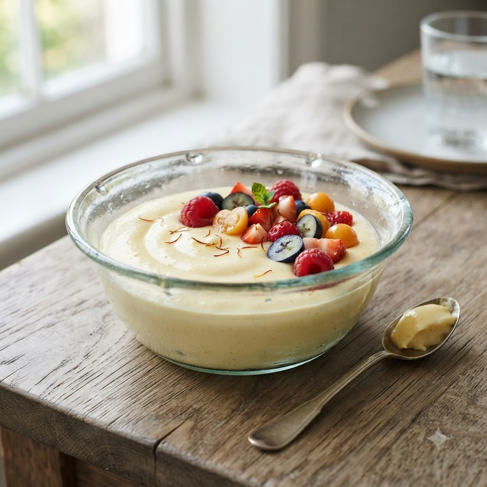

Custard (Vanilla or Fruit)

Custard (Vanilla or Fruit)
Chef Magic – Boil + Whisk Auto 11 min — Serves 4
Ingredients
- 2.5 cups milk
- 2 tbsp custard powder
- 3 tbsp sugar
- 1/2 cup milk (for the slurry)
- Chopped fruit of choice, to serve
Method
1Whisk custard powder with the extra cold milk to make a smooth slurry.
2Add the remaining milk and sugar to the jar; select Boil (Speed 1–2, 100°C).
3Once hot, stir in the custard slurry and continue on Boil (Speed 1–2, 100°C), stirring, until thickened.
4Cool slightly, pour over chopped fruit and chill before serving.